Rust环境配置
安装C++build tool
安装VisualStudio
在单个组件选项卡中安装如下组件 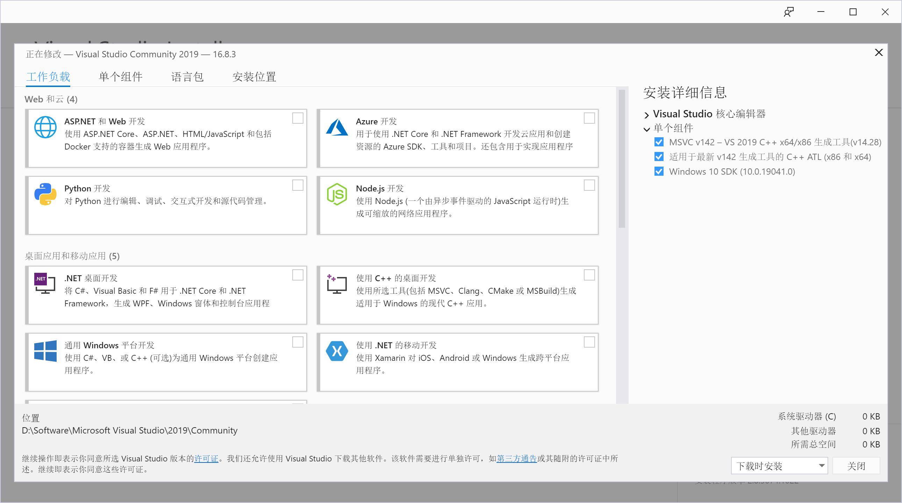
安装Rust
Rust 中文官网 Rust-lang 下载 rustup-init.exe
配置环境变量
打开系统环境变量
在环境变量里新建 RUSTUP_HOME ，对应 rustup 的安装目录在环境变量里配置，以下是我的配置
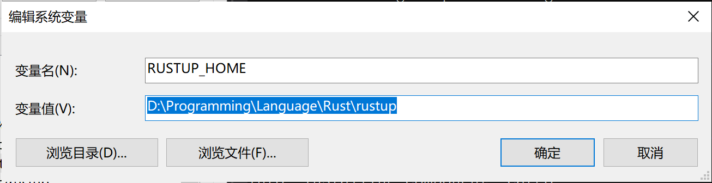
新建CARGO_HOME ，对应 cargo 的安装目录
因为Rust的服务器在国外，安装速度较慢，所以我们可以考虑使用镜像源
新建 RUSTUP_DIST_SERVER，其中的内容为 https://mirrors.ustc.edu.cn/rust-static
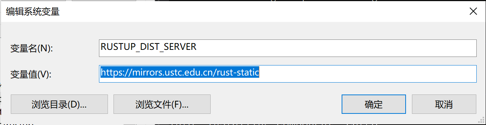
新建 RUSTUP_UPDATE_ROOT，其中的内容为https://mirrors.ustc.edu.cn/rust-static/rustup
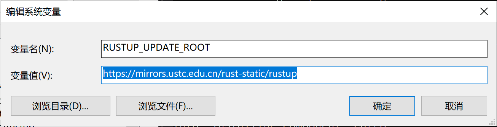
安装 Rust
运行 rustup-init.exe
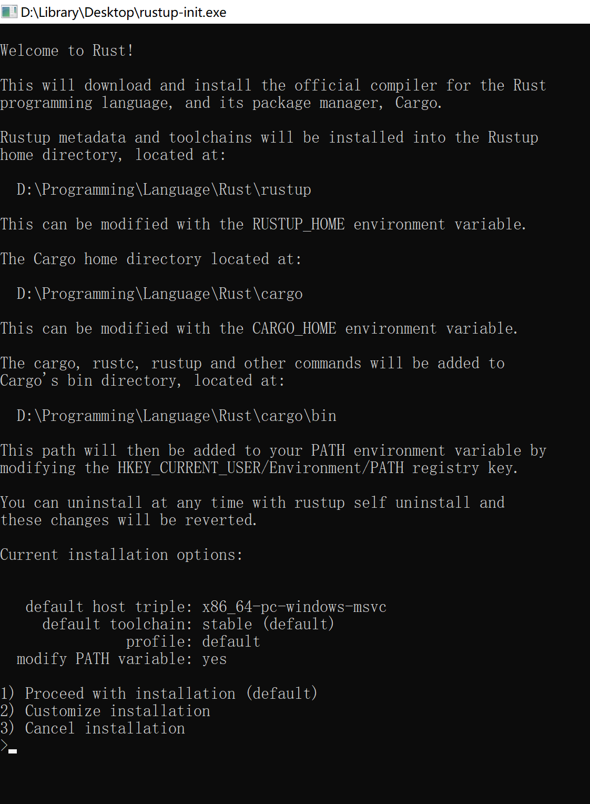
输入 1 后回车即可
完成安装
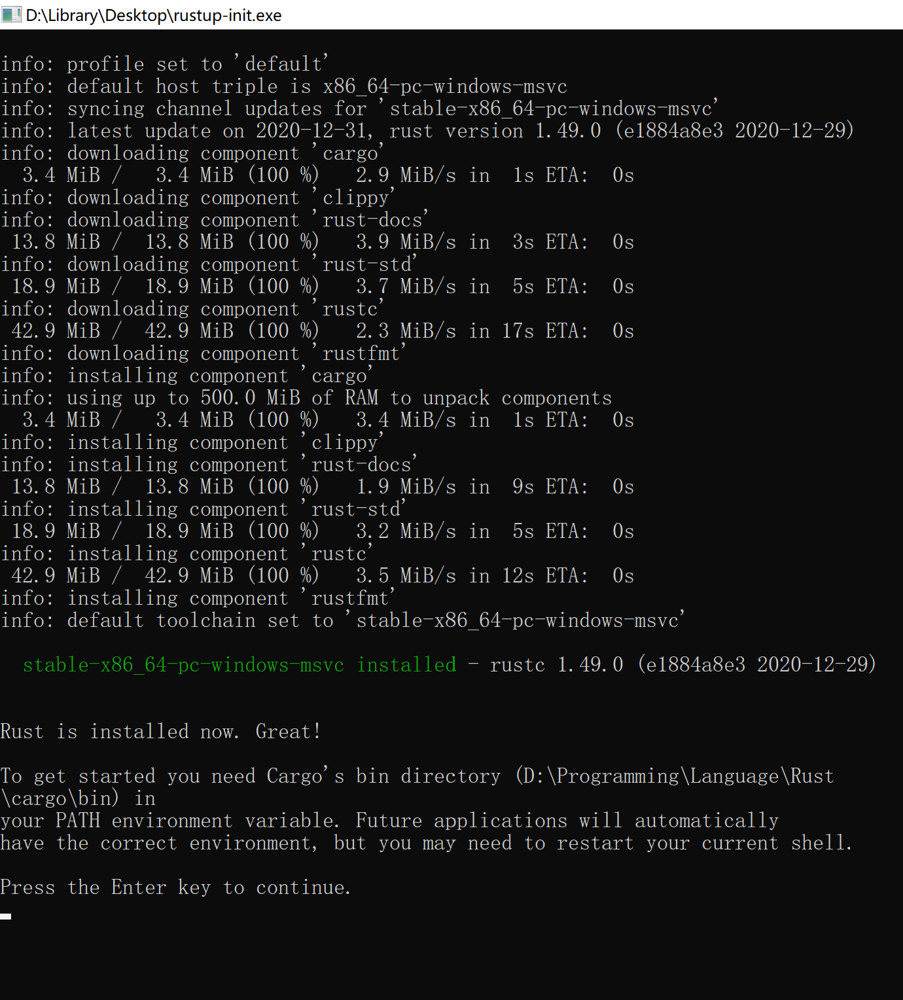
验证安装
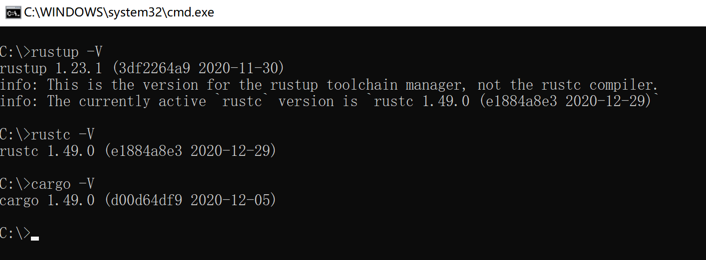
配置开发环境
安装编辑器
这里推荐vscode
安装插件
Rust官方插件
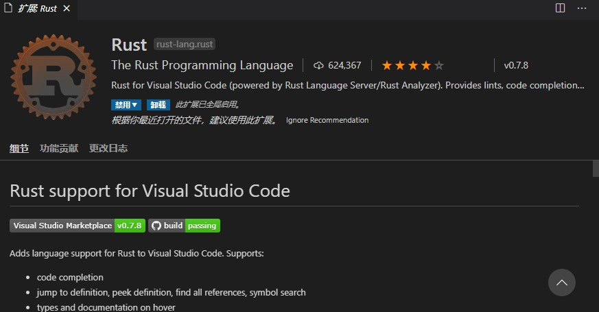
如果您喜欢折腾，我更推荐这一款 rust-analyer
中文界面插件
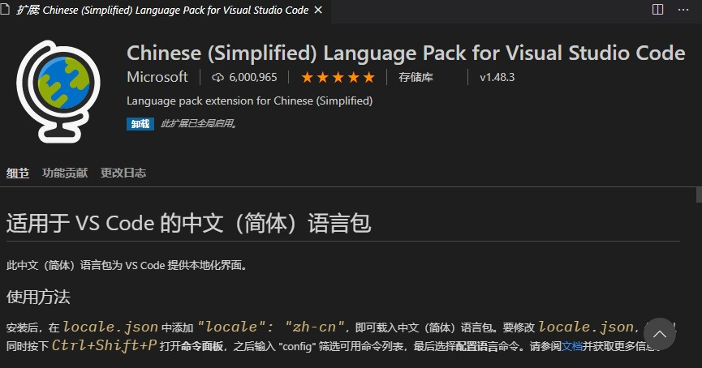
AI代码提示插件
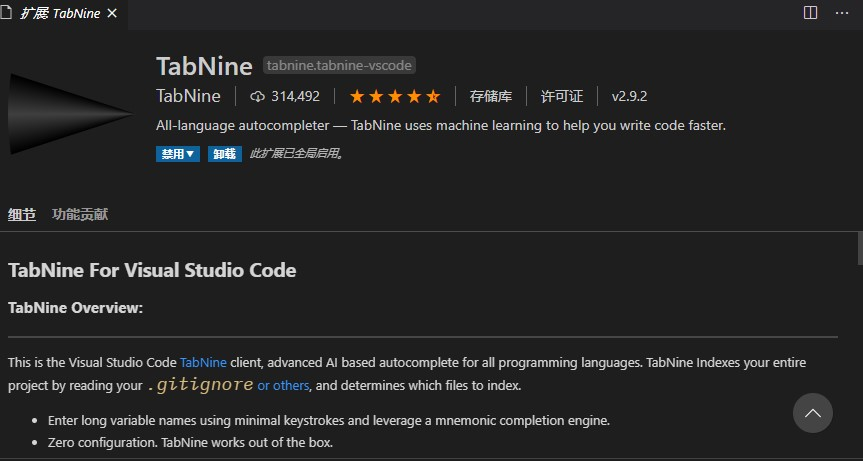
crate管理插件
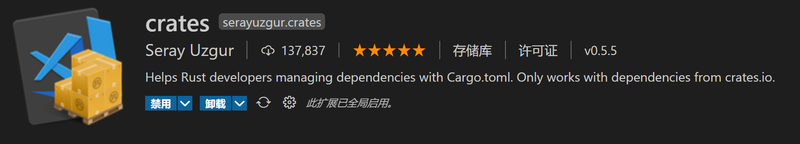
TOML支持插件
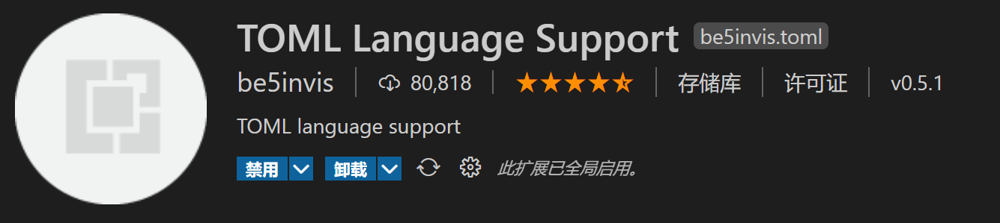